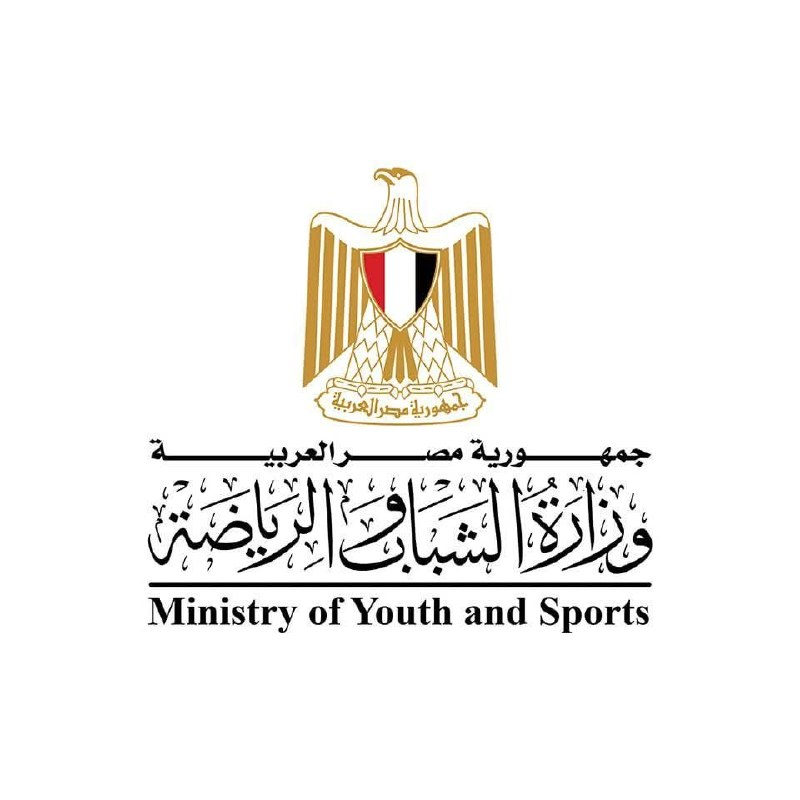
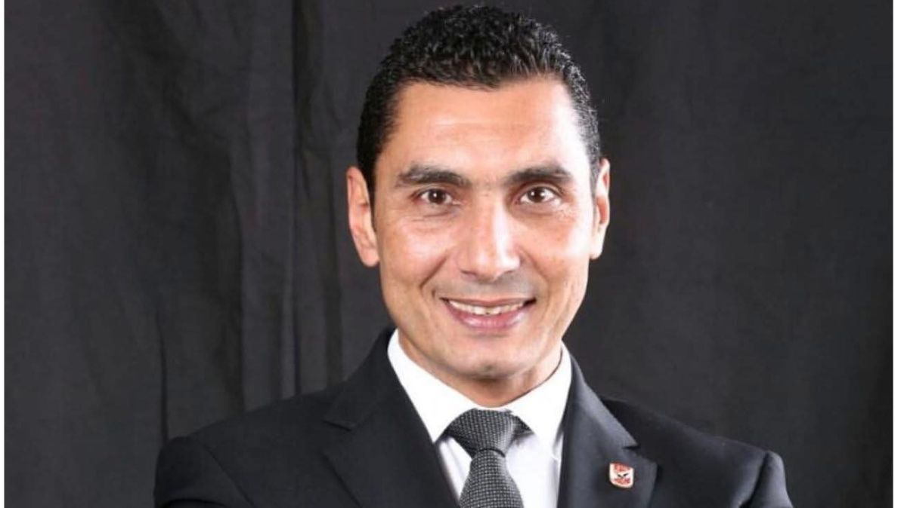

اتحاد شباب الوطن
الإسكندرية

نبني جيلاً واعياً قادراً على قيادة التغيير وصناعة المستقبل،
بروح المواطنة وعزيمة الشباب.
هو كيان شبابي معتمد يتبع وزارة الشباب والرياضة المصرية ويتبع كيان اتحاد شباب وطن مصر، ويعمل تحت رعاية معالي الدكتور جوهر نبيل. يهدف الاتحاد إلى تنمية قدرات الشباب وتأهيل كوادر قيادية قادرة على مواكبة سوق العمل، مع تعزيز روح المواطنة والانتماء لديهم. كما يسعى الاتحاد لتمكين الشباب من اكتشاف مشكلاتهم والقدرة على حلها، ودعم المبتكرين والمتميزين علمياً ورياضياً بما يتماشى مع رؤية مصر 2030.
تحت إشراف معالي الدكتور جوهر نبيل

يضم الاتحاد 10 لجان متخصصة — اضغط على أي لجنة لعرض تفاصيلها وقياداتها
انضم إلى اتحاد شباب الوطن – الإسكندرية، وكن أحد صُنّاع المستقبل.
منصات التواصل
فيسبوك
تابعنا على الفيسبوك
إنستغرام
شاهد صورنا وفعالياتنا
واتساب
تحدّث معنا مباشرةً
تيك توك
تابعنا على تيك توك
جيميل
راسلنا على البريد